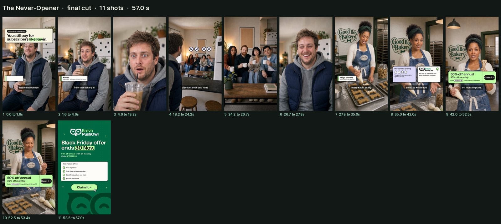
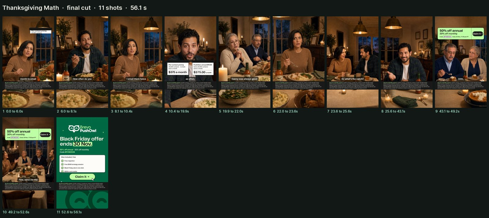

Storyboards (all four)
BFCM 2026 videos v2: finals
The first two approved videos, produced through the cinematic ads harness on 8 Oct 2026: native in-video dialogue in two ~30 s single-shot takes per video (Seedance 2.5 face, 720p), one composed score, the HFX motion-graphics layer from the BFCM motion system (Brevo palette), burned-in captions and the shared Brevo PushOwl end card. The Standoff and Already Live are waiting.
Spend: N1-1 $25.24 and N2-1 $16.77 in production ($42.01 together), both under their estimates ($41 and $49). With the storyboards, $51.47 all-in. The treg balance moved $40.34 for the five accepted takes against $40.02 logged.
N1-1Mockumentary57.0 s with end card9:16, 1080x1920, 24 fps
The Never-Opener
Kevin has not opened a bakery email in two years and learns the bakery still pays for him; Maya explains why she moved to PushOwl and gives the offer and deadline to the lens.
Spend: $25.24 production (3 takes $24.01, score $0.83, QA $0.40), $29.65 all-in with the storyboard; estimate was $41. Download MP4 · storyboard
What was checked
- Two transcribers on the isolated vocal stem of every take and of the final: every line present, in order, as written (one word drift: Kevin says "none of them opened", captioned as spoken).
- PushOwl heard as "PushOwl" / "Push Owl" in the final; BFCM2026 never spoken (on screen only); no platform or competitor names.
- Voice check (diarization): Maya in take B1 and take B2 clusters as one speaker, Kevin separate.
- Frame scan: no dark or flash frames; faces, wardrobe, the Good Boy Bakery sign and the friends' seating consistent; every overlay checked against faces at its peak frame.
- Loudness -14.4 LUFS; share copy 19 MB.
Notes
- Take B was rolled twice (allowed by the one-retake rule): B1 said "monthly stands" instead of "monthly plans" (both transcribers, isolated clip), B2 said the brand as "Pushall". The cut uses B1 for Maya's first two lines (brand correct) and B2 for the offer line, joined on a native cut.
- A deliberate documentary jump cut with a small punch-in at 4.6 s removes a 2.3 s pause after the hook line.
- Delivery is quicker than the planned 130 to 145 words a minute (about 165 to 220 inside lines, with natural pauses between them).

N2-1Family comedy56.1 s with end card9:16, 1080x1920, 24 fps
Thanksgiving Math
Nicole pays $375 a month to email 20,000 contacts; her brother pays $37.50 with the same list because PushOwl charges for sends; Dad delivers the deadline. The X2 footnote band holds from the first figure through the end card.
Spend: $16.77 production (2 takes $16.01, score $0.56, QA $0.20), $21.82 all-in with the storyboard; estimate was $49. Download MP4 · storyboard
What was checked
- Two transcribers on the vocal stem of every take and of the final: every line present and exact, all figures spoken as written (three hundred seventy-five dollars, twenty thousand, twice a month, thirty-seven dollars and fifty cents, ten times less).
- PushOwl heard as "Push Owl" by both transcribers; BFCM2026 never spoken; no platform or competitor names.
- Frame scan: no dark or flash frames; seating, wardrobe, the Garza label and the pie-course table (no turkey) consistent; overlays checked against faces; the receipts sit low in Danny's close-up so they never cover a face.
- Loudness -14.1 LUFS; share copy 15 MB.
Notes
- One take per unit. The first submission of take A was rejected by the video model's moderation (refunded); the word "stabs" (a fork into a green bean) was changed to "pushes" and it went through.
- Voice refs for Nicole and Danny were cut from take A and passed into take B.
- The end card is the motion system's shared EndCard with the X2 FootnoteBand added; its included-list card, button and deadline line sit about 120 px higher so the band never covers them.
- Delivery is quicker than planned inside lines (about 160 to 210 words a minute), with natural pauses between speakers.

For Farooq to decide
- Pace: the model speaks faster inside lines than the professor pace; the scripts are unchanged. Keep these cuts, or allow re-rolls (about $8 a take) to chase a slower read?
- N1-1 joins Maya's voice from two takes; diarization says one speaker, but give it one listen.
- Runtimes are 57 s and 56 s (shorter than the 63 s planned, because the takes ran tighter).
- Already Live (N4-1): under the new USD rule the Vital Vogue example ads (rupee prices, India references) can't be used; it needs a USD demo-store set before production.
Not checked: a human listen. Music: ElevenLabs Music via Replicate; confirm commercial-use terms before paid media. Sources: cinematic-ads-harness/runs/brevo-v2-never-opener and brevo-v2-thanksgiving-math (plan.json, overlays.json, cut.json, edit.json, music.json, ledger.json).